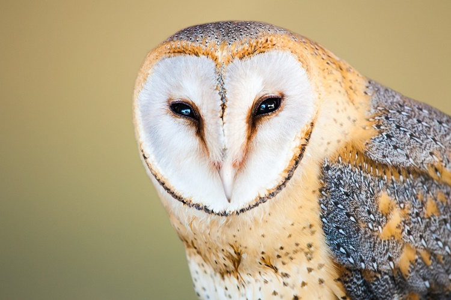

(Tyto alba)

La lechuza común (Tyto alba), también denominada lechuza de los campanarios o lechuza blanca, es una especie de ave estrigiforme perteneciente a la familia Tytonidae. Es una de las aves más ampliamente distribuidas del mundo, pudiendo encontrarse en casi todo el planeta, con excepción de regiones polares o desérticas, Asia al norte de los Himalayas, la mayor parte de Indonesia y algunas islas del Pacífico. El área de distribución de esta rapaz incluye los cinco continentes, en los que podemos encontrar varias subespecies.
Su dieta está compuesta por pequeños mamíferos como ratas, ratones, también lagartijas y otros reptiles.
La lechuza cumple un rol muy importante, evitando la superpoblación de roedores y reptiles.
Los granjeros, durante muchos años consideraron a estas aves una amenaza para los sembradíos, pero, por el contrario, siempre han cumplido un importante rol, combatiendo todo tipo de alimañas.
Las lechuzas no construyen sus propios nidos. Utilizan los de otras aves, huecos en los árboles o madrigueras en las montañas.
Se las relaciona con la muerte, con las prácticas esotéricas y la brujería.
REGRESAR AL MENU